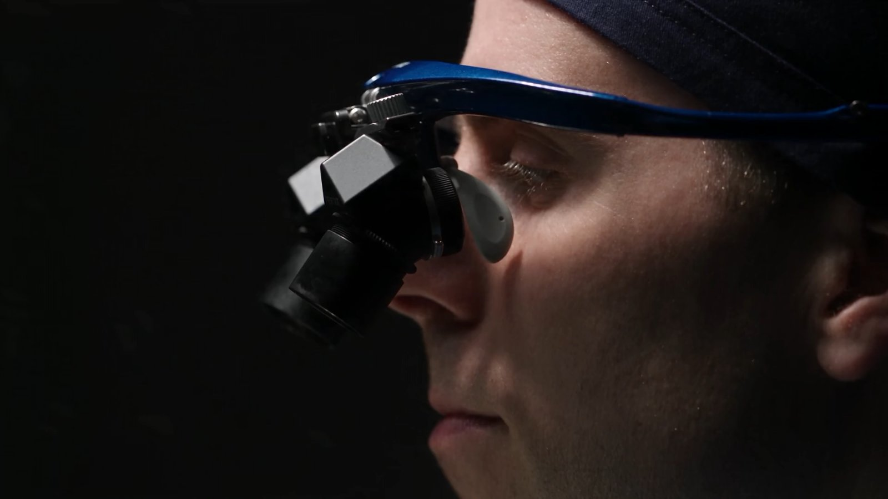

Ergonomics
Look straight ahead, not down
Conventional loupes converge your eyes toward a single close point, and to see the field you tip your head down and hold it there. PENTAX Loupes are built around a different idea: your eyes stay level, and the optics do the bending.
Conventional loupes. The head tips forward so the eyes can converge on one close point, and stays there for the whole procedure.
PENTAX Loupes. The head stays level and the eyes look straight ahead. Prisms inside the barrels bend the optical path down to the field.
Deflection prisms
Prisms inside each barrel redirect the optical path, much like working with a microscope. You look straight ahead at your work instead of angling your eyes down, which helps you hold a natural, upright posture through long procedures.
Parallel viewing
Conventional loupes converge your eyes toward a single close point. PENTAX Loupes are built for parallel viewing instead, designed to reduce eye convergence and help support an upright working posture.


“With PENTAX loupes, the posture of my neck really changed. I can look straight ahead, just like working with a microscope, and I enjoy parallel viewing with a very large field of view.”
Dr Robotti · President, The Rhinoplasty Society of Europe